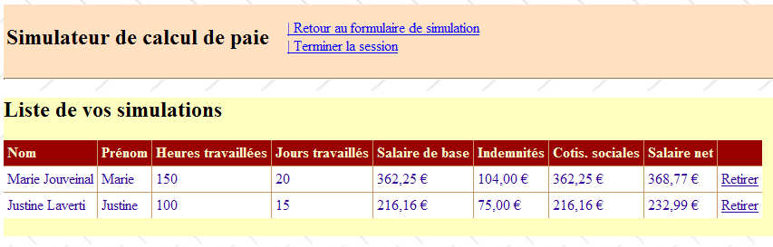
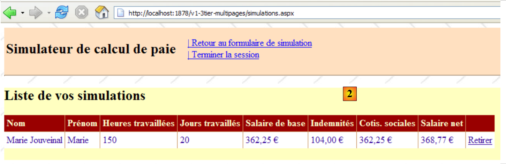
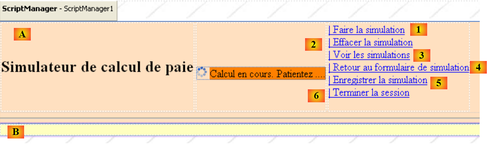
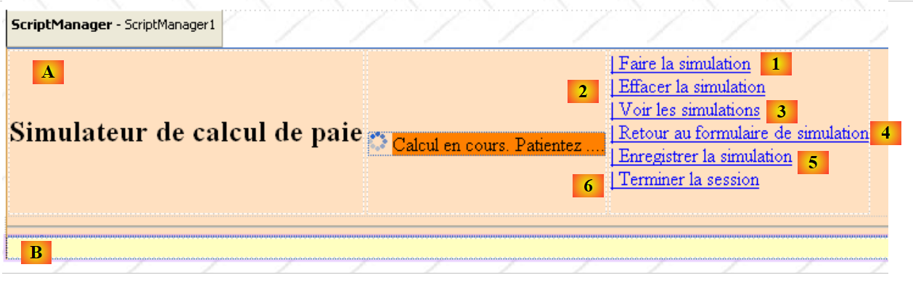

11. Die Anwendung [SimuPaie] – Version 7 – ASP.NET / Mehrfachansichten / Mehrere Seiten
Empfohlene Lektüre: Referenz [1], Entwicklung WEB mit ASP.NET, Absatz 1: Beispiele
Wir betrachten nun eine Version, die funktional identisch ist mit der zuvor untersuchten dreischichtigen Anwendung ASP.NET ([pam-v4-3tier-nhibernate-multivues-monopage]), ändern jedoch deren Architektur wie folgt: Während in der vorherigen Version die Ansichten durch eine einzige Seite ASPX implementiert wurden, werden sie hier durch drei Seiten ASPX implementiert.
Die Architektur der vorherigen Anwendung sah wie folgt aus:
 |
Hier haben wir eine MVC-Architektur (Model – View – Controller):
- [Default.aspx.cs] enthält den Controller-Code. Die Seite [Default.aspx] ist der einzige Ansprechpartner für den Client. Alle Anfragen des Clients laufen über diese Seite.
- [Saisies, Simulation, Simulations, ...] sind die Views. Diese Views werden hier durch die Komponenten [View] der Seite [Default.aspx] implementiert.
Die Architektur der neuen Version sieht wie folgt aus:
 |
- Nur die Ebene [web] wird weiterentwickelt
- Die Ansichten (das, was dem Benutzer angezeigt wird) ändern sich nicht.
- Der Controller-Code, der in der vorherigen Version vollständig in [Default.aspx.cs] enthalten war, ist nun auf mehrere Seiten verteilt:
- [MasterPage.master]: eine Seite, die die gemeinsamen Elemente der verschiedenen Ansichten zusammenfasst: die obere Leiste mit ihren Menüoptionen
- [Formulaire.aspx]: Die Seite, die das Simulationsformular anzeigt und die Aktionen verwaltet, die auf diesem Formular stattfinden
- [Simulations.aspx]: Die Seite, die die Liste der Simulationen anzeigt und die Aktionen verwaltet, die auf dieser Seite stattfinden
- [Erreurs.aspx]: Die Seite, die bei einem Fehler bei der Initialisierung der Anwendung angezeigt wird. Auf dieser Seite sind keine Aktionen möglich.
Man kann davon ausgehen, dass es sich hierbei um eine MVC-Architektur mit mehreren Controllern handelt, während die Architektur der Vorgängerversion eine MVC-Architektur mit einem einzigen Controller war.
Die Bearbeitung einer Anfrage eines Kunden erfolgt in folgenden Schritten:
- Der Client sendet eine Anfrage an die Anwendung. Er richtet diese an eine der beiden Seiten [Formulaire.aspx, Simulations.aspx].
- Die angeforderte Seite verarbeitet diese Anfrage. Dazu benötigt sie möglicherweise die Unterstützung der Schicht [métier], die ihrerseits die Schicht [dao] benötigen kann, falls Daten mit der Datenbank ausgetauscht werden müssen. Die Anwendung erhält eine Antwort von der Schicht [métier].
- Anhand dieser Antwort wählt sie (3) die Ansicht (= die Antwort) aus, die an den Client gesendet werden soll, und stellt ihm (4) die benötigten Informationen (das Modell) zur Verfügung.
- Die Antwort wird an den Client gesendet (5)
11.1. Die Ansichten der Anwendung
Dem Benutzer werden folgende Ansichten angezeigt:
- - die Ansicht [VueSaisies], die das Simulationsformular anzeigt
 |
- - die Ansicht [VueSimulation], die zur Anzeige des detaillierten Simulationsergebnisses verwendet wird:
 |
- - die Ansicht [VueSimulations], die die Liste der vom Kunden durchgeführten Simulationen anzeigt
 |
- - die Ansicht [VueSimulationsVides], die anzeigt, dass der Kunde keine oder keine Simulationen mehr hat:
 |
- die Ansicht [VueErreurs], die einen Fehler bei der Initialisierung der Anwendung anzeigt:
 |
11.2. Generierung der Ansichten in einer Umgebung mit mehreren Controllern
In der vorherigen Version wurden alle Ansichten ausgehend von der einzigen Seite [Default.aspx] generiert. Diese enthielt zwei Komponenten [MultiView], und die Ansichten setzten sich aus einer Kombination von einer oder zwei Komponenten [View] zusammen, die zu diesen beiden Komponenten [MultiView] gehörten.
Diese Architektur ist zwar bei wenigen Ansichten effizient, stößt jedoch an ihre Grenzen, sobald die Anzahl der Komponenten, aus denen sich die verschiedenen Ansichten zusammensetzen, groß wird: Bei jeder Anfrage an die einzige Seite [Default.aspx] werden nämlich alle ihre Komponenten instanziiert, obwohl nur einige davon zur Generierung der Antwort an den Benutzer verwendet werden. Bei jeder neuen Anfrage wird somit unnötiger Aufwand betrieben, der sich negativ auswirkt, wenn die Gesamtzahl der Komponenten der Seite groß ist.
Eine Lösung besteht daher darin, die Ansichten auf verschiedene Seiten zu verteilen. Genau das tun wir hier. Betrachten wir zwei verschiedene Fälle der Ansichtsgenerierung:
- Die Anfrage wird an eine Seite P1 gerichtet, und diese generiert die Antwort
- Die Anfrage wird an die Seite P1 gerichtet, und diese fordert die Seite P2 auf, die Antwort zu generieren
11.2.1. Fall 1: Eine Controller-/View-Seite
In Fall 1 kehrt man zur Ein-Controller-Architektur der vorherigen Version zurück, bei der die Seite [Default.aspx] die Seite P1 ist:
 |
- Der Client sendet eine Anfrage an die Seite P1 (1)
- Die Seite P1 verarbeitet diese Anfrage. Dazu benötigt sie möglicherweise die Unterstützung der Ebene [métier] (2), die ihrerseits die Ebene [dao] benötigen könnte, falls Daten mit der Datenbank ausgetauscht werden müssen. Die Anwendung erhält eine Antwort von der Schicht [métier].
- Anhand dieser Antwort wählt sie (3) die Ansicht (= die Antwort) aus, die an den Client gesendet werden soll, und stellt ihm (4) die Informationen (das Modell) zur Verfügung, die sie benötigt. Dabei geht es darum, auf der Seite P1 die anzuzeigenden Komponenten [Panel] oder [View] auszuwählen und die darin enthaltenen Komponenten zu initialisieren.
- Die Antwort wird an den Client gesendet (5)
Hier sind zwei Beispiele aus der untersuchten Anwendung:
[page Formulaire.aspx]
 |
- in [1]: Nachdem der Benutzer die Seite [Formulaire.aspx] angefordert hat, fordert er eine Simulation
- in [2]: Die Seite [Formulaire.aspx] hat diese Anfrage bearbeitet und die Antwort selbst generiert, indem sie eine Komponente [View] anzeigte, die in [1] nicht angezeigt worden war
[page Simulations.aspx]
 |
- in [1]: Der Benutzer möchte, nachdem er die Seite [Simulations.aspx] aufgerufen hat, eine Simulation entfernen
- in [2]: Die Seite [Simulations.aspx] hat diese Anfrage bearbeitet und selbst die Antwort generiert, indem sie die neue Liste der Simulationen erneut angezeigt hat.
 |
11.2.2. Fall 2: eine Seite mit einem Controller, eine Seite mit einem Controller und einer Ansicht
Fall 2 kann verschiedene Architekturen abdecken. Wir wählen die folgende:
 |
- Der Client sendet eine Anfrage an die Seite P1 (1)
- Die Seite P1 verarbeitet diese Anfrage. Dazu benötigt sie möglicherweise die Unterstützung der Schicht [métier] (2), die ihrerseits die Schicht [dao] benötigt, falls Daten mit der Datenbank ausgetauscht werden müssen. Die Anwendung erhält eine Antwort von der Schicht [métier].
- Anhand dieser Antwort wählt sie (3) die Ansicht (= die Antwort) aus, die an den Client gesendet werden soll, und stellt ihm (4) die Informationen (das Modell) zur Verfügung, die sie benötigt. In diesem Fall muss die zu generierende Ansicht jedoch nicht von der Seite P1, sondern von der Seite P2 erstellt werden. Um die Schritte (3) und (4) auszuführen, hat die Seite P1 zwei Möglichkeiten:
- eine Ausführungsumleitung auf die Seite P2 über die Transaktion [Server.Transfer(" P2.aspx ")] vornehmen. In diesem Fall kann sie die Vorlage für die Seite P2 in den Kontext der Anfrage [Context.Items[" clé "]=valeur] oder in die Sitzung des Benutzers [Session.[" clé "]=valeur]. Die Seite P2 wird dann instanziiert, und bei der Verarbeitung ihres Ereignisses Load kann sie beispielsweise die von der Seite P1 übermittelten Informationen mithilfe der Operationen [valeur=(Type)Context.Items[" clé "]] oder [valeur=(Type)Session[" clé "]] abgerufen werden, je nach Fall, wobei Type der Typ des dem Schlüssel zugeordneten Werts ist. Die Übertragung von Werten über den Kontext Context ist am besten geeignet, wenn es nicht erforderlich ist, die Werte des Modells für eine zukünftige Anfrage des Kunden beizubehalten.
- Bitten Sie den Kunden, sich über den Vorgang [Response.Redirect(" P2.aspx ")] auf die Seite P2 weiterzuleiten. In diesem Fall wird die Seite P1 das für die Seite P2 bestimmte Modell in die Sitzung einfügen, da der Anfragekontext Context am Ende jeder Anfrage gelöscht wird. Die Umleitung führt jedoch dazu, dass die erste Anfrage des Clients an P1 beendet wird und eine zweite Anfrage desselben Clients, diesmal an P2, gesendet wird. Es liegen zwei aufeinanderfolgende Anfragen vor. Es ist bekannt, dass die Sitzung eine Möglichkeit darstellt, „Speicher“ zwischen Anfragen zu bewahren. Es gibt jedoch auch andere Lösungen als die Sitzung.
- Unabhängig davon, wie P2 die Kontrolle übernimmt, landet man anschließend wieder in Fall 1: P2 hat eine Anfrage erhalten, die sie bearbeiten wird (5), und sie wird die Antwort selbst generieren (6, 7). Man kann sich auch vorstellen, dass die Seite P2 nach der Bearbeitung der Anfrage die Kontrolle an eine Seite P3 übergibt und so weiter.
Hier ein Beispiel aus der untersuchten Anwendung:
 |
- zu [1]: Der Benutzer, der die Seite [Formulaire.aspx] aufgerufen hat, möchte die Liste der Simulationen anzeigen
- in [2]: Die Seite [Formulaire.aspx] bearbeitet diese Anfrage und leitet den Client zur Seite [Simulations.aspx] weiter. Letztere liefert dem Benutzer die Antwort. Anstatt den Client aufzufordern, sich selbst umzuleiten, hätte die Seite [Formulaire.aspx] die Anfrage des Clients an die Seite [Simulations.aspx] weiterleiten können. In diesem Fall wäre auf der Seite [2] dieselbe URL zu sehen gewesen wie auf der Seite [1]. Denn ein Browser zeigt immer die zuletzt angeforderte URL an:
- Die in [1] angeforderte Aktion ist für die Seite [Formulaire.aspx] bestimmt. Der Browser führt einen Aufruf an POST zu dieser Seite durch.
- Wenn die Seite [Formulaire.aspx] die Anfrage verarbeitet und sie dann über [Server.Transfer(" Simulations.aspx ")] an die Seite [Simulations.aspx] weiterleitet, bleibt man innerhalb derselben Anfrage. Der Browser zeigt dann unter [2] die Seite URL von [Formulaire.aspx] an, zu der die Weiterleitung über POST stattgefunden hat.
- Wenn die Seite [Formulaire.aspx] die Anfrage verarbeitet und sie dann über [Response.Redirect(" Simulations.aspx ")] an die Seite [Simulations.aspx] weiterleitet, führt der Browser eine zweite Anfrage durch, nämlich eine GET an [Simulations.aspx]. Der Browser zeigt dann unter [2] die Seite URL von [Simulations.aspx] an, an die die Anfrage GET weitergeleitet wurde. Das zeigt uns der obige Screenshot [2].
11.3. Das Visual Web Developer-Projekt der Ebene [web]
Das Visual Web Developer-Projekt der Ebene [web] sieht wie folgt aus:
 |
- In [1] findet man:
- Die Konfigurationsdatei [Web.config] der Anwendung – ist identisch mit der der Anwendung [pam-v4-3tier-nhibernate-multivues-monopage].
- Die Seite [Default.aspx] leitet den Kunden lediglich auf die Seite [Formulaire.aspx] weiter
- die Seite [Formulaire.aspx], die dem Benutzer das Simulationsformular anzeigt und die mit diesem Formular verbundenen Aktionen verarbeitet
- die Seite [Simulations.aspx], die dem Benutzer die Liste seiner Simulationen anzeigt und die mit dieser Seite verbundenen Aktionen verarbeitet
- die Seite [Erreurs.aspx], die dem Benutzer eine Seite anzeigt, die auf einen beim Start der Webanwendung aufgetretenen Fehler hinweist.
- Auf der Seite [2] sind die Projektreferenzen zu sehen.
Kommen wir zurück zur Architektur des neuen Projekts:
 |
Im Vergleich zum Projekt [pam-v4-3tier-nhibernate-multivues-monopage] ändern sich lediglich die Ansichten. Daher übernimmt das neue Projekt einige Dateien aus diesem Projekt:
- die Konfigurationsdatei [Web.config]
- die von DLL referenzierten Dateien [pam-dao-nhibernate, pam-metier-dao-nhibernate, Spring.Core, NHibernate]
- die globale Anwendungsklasse [Global.asax]
- die Ordner [images, ressources, pam]
Um die Konsistenz mit dem in der Entwicklung befindlichen Projekt zu gewährleisten, stellen wir sicher, dass der Namensraum der Ansichten und der globalen Anwendungsklasse [pam-v7] lautet:
 |
11.4. Der Code für die Darstellung der Seiten
11.4.1. Die Master-Seite [MasterPage.master]
Die in Abschnitt 11.1 vorgestellten Ansichten der Anwendung weisen gemeinsame Teile auf, die in einer Master-Seite zusammengefasst werden können, die in Visual Studio als „Master Page“ bezeichnet wird. Nehmen wir zum Beispiel die folgenden Ansichten [VueSaisies] und [VueSimulationsVides], die jeweils von den Seiten [Formulaire.aspx] und [Simulations.aspx] generiert wurden:
 |
Diese beiden Ansichten haben die obere Leiste (Titel und Menüoptionen) gemeinsam. Dies gilt für alle Ansichten, die dem Benutzer angezeigt werden: Sie alle verfügen über dieselbe obere Leiste. Damit verschiedene Seiten dasselbe Darstellungsfragment gemeinsam nutzen können, gibt es verschiedene Lösungen, darunter die folgenden:
- Dieses gemeinsame Fragment in eine Benutzerkomponente einfügen. Dies war die wichtigste Technik bei ASP.NET 1.1
- Dieses gemeinsame Fragment in eine Master-Seite einfügen. Diese Technik wurde mit ASP.NET 2.0 eingeführt. Diese verwenden wir hier.
Um eine Master-Seite in einer Webanwendung zu erstellen, gehen Sie wie folgt vor:
- Rechtsklick auf das Projekt / Neues Element hinzufügen / Master-Seite:
 |
Durch das Hinzufügen einer Master-Seite werden standardmäßig drei Dateien zur Webanwendung hinzugefügt:
- [MasterPage.master]: der Layout-Code der Master-Seite
- [MasterPage.master.cs]: der Steuerungscode der Master-Seite
- [Masterpage.Master.designer.cs]: die Deklaration der Komponenten der Master-Seite
Der von Visual Studio in [MasterPage.master] generierte Code lautet wie folgt:
<%@ Master Language="C#" AutoEventWireup="true" CodeBehind="MasterPage.master.cs" Inherits="pam_v7.MasterPage" %>
<!DOCTYPE html PUBLIC "-//W3C//DTD XHTML 1.0 Transitional//EN" "http://www.w3.org/TR/xhtml1/DTD/xhtml1-transitional.dtd">
<html xmlns="http://www.w3.org/1999/xhtml">
<head runat="server">
<title>Untitled Page</title>
<asp:ContentPlaceHolder id="head" runat="server">
</asp:ContentPlaceHolder>
</head>
<body>
<form id="form1" runat="server">
<div>
<asp:ContentPlaceHolder id="ContentPlaceHolder1" runat="server">
</asp:ContentPlaceHolder>
</div>
</form>
</body>
</html>
- Zeile 1: Das Tag <%@ Master ... %> dient dazu, die Seite als Master-Seite zu definieren. Der Steuerungscode der Seite befindet sich in der durch das Attribut CodeBehind definierten Datei, und die Seite erbt die durch das Attribut Inherits definierte Klasse.
- Zeilen 12–18: Das Formular der Master-Seite
- Zeilen 14–16: Ein leerer Container, der in unserer Anwendung eine der Seiten [Formulaire.aspx, Simulations.aspx, Erreurs.aspx] enthalten wird. Der Client erhält als Antwort immer dieselbe Seite, die Master-Seite, in der der Container [ContentPlaceHolder1] einen von einer der Seiten [Formulaire.aspx, Simulations.aspx, Erreurs.aspx] bereitgestellten Datenstrom HTML aufnehmen wird. Um also das Erscheinungsbild der an die Clients gesendeten Seiten zu ändern, genügt es, das Erscheinungsbild der Master-Seite zu ändern.
- Zeilen 8–9: Ein leerer Container, mit dem die „Tochter“-Seiten den Header <head>...</head> anpassen können.
Die visuelle Darstellung (Registerkarte „Design“) dieses Quellcodes ist unten unter (1) zu sehen. Außerdem ist es möglich, mithilfe der Komponente [ContentPlaceHolder] (2) aus der Symbolleiste [Standard] beliebig viele Container hinzuzufügen.
 |
Der von Visual Studio in [MasterPage.master.cs] generierte Steuerungscode lautet wie folgt:
using System;
public partial class MasterPage : System.Web.UI.MasterPage
{
protected void Page_Load(object sender, EventArgs e)
{
}
}
- Zeile 3: Die Klasse, auf die das Attribut [Inherits] der Anweisung <%@ Master ... %> auf der Seite [MasterPage.master] verweist, leitet sich von der Klasse [System.Web.UI.MasterPage] ab
Oben sehen wir das Vorhandensein der Methode Page_Load, die das Ereignis Load der Master-Seite verarbeitet. Die Master-Seite enthält eine weitere Seite. In welcher Reihenfolge treten die Ereignisse Load der beiden Seiten auf? Hier gilt eine allgemeine Regel: Das Ereignis Load einer Komponente tritt vor dem ihres Containers ein. In diesem Fall findet das Ereignis Load der in die Master-Seite eingefügten Seite also vor dem der Master-Seite selbst statt.
Um eine Seite zu generieren, deren Master-Seite die vorherige Seite [MasterPage.master] ist, kann man wie folgt vorgehen:
 |
- in [1]: Rechtsklick auf die Masterseite, dann Option [Ajouter une page de contenu]
- zu [2]: Es wird eine Standardseite generiert, in diesem Fall [WebForm1.aspx].
Der Layout-Code [WebForm1.aspx] lautet wie folgt:
<%@ Page Title="" Language="C#" MasterPageFile="~/MasterPage.Master" AutoEventWireup="true" CodeBehind="WebForm1.aspx.cs" Inherits="pam_v7.WebForm1" %>
<asp:Content ID="Content1" ContentPlaceHolderID="ContentPlaceHolder1" runat="server">
</asp:Content>
- Zeile 1: Die Anweisung „Page“ und ihre Attribute
- MasterPageFile: Bezeichnet die Master-Datei der durch die Anweisung beschriebenen Seite. Das Zeichen ~ steht für den Projektordner.
- Die übrigen Parameter entsprechen den üblichen Parametern einer Webseite ASP
- Zeilen 2–3: Die Tags <asp:Content> werden über das Attribut ContentPlaceHolderID einzeln mit den Anweisungen <asp:ContentPlaceHolder> der Master-Seite verknüpft. Die zwischen den oben genannten Zeilen 2–3 platzierten Komponenten werden bei der Ausführung in den Container von ID ContentPlaceHolder1 der Master-Seite eingefügt.
Durch Umbenennen der so generierten Seite „[WebForm1.aspx]“ lassen sich verschiedene Seiten erstellen, die „[MasterPage.master]“ als Master-Seite verwenden.
Für unsere Anwendung [SimuPaie] sieht die Master-Seite wie folgt aus:
 |
Nr. | Typ | Name | Rolle |
Panel (oben in Rosa) | Kopfzeile | Seitenkopf | |
Panel (oben in Gelb) | Inhalt | Inhalt der Seite | |
LinkButton | LinkButtonFaireSimulation | Simulation berechnen | |
LinkButton | LinkButtonEffacerSimulation | Löscht das Eingabeformular | |
LinkButton | LinkButtonVoirSimulations | zeigt die Liste der bereits durchgeführten Simulationen an | |
LinkButton | LinkButtonFormulaireSimulation | kehrt zum Eingabeformular zurück | |
LinkButton | LinkButtonEnregistrerSimulation | speichert die aktuelle Simulation in der Simulationsliste | |
LinkButton | LinkButtonTerminerSession | Beendet die aktuelle Sitzung |
Der entsprechende Quellcode lautet wie folgt:
<%@ Master Language="C#" AutoEventWireup="true" CodeBehind="MasterPage.master.cs" Inherits="pam_v7.MasterPage" %>
<!DOCTYPE html PUBLIC "-//W3C//DTD XHTML 1.0 Transitional//EN" "http://www.w3.org/TR/xhtml1/DTD/xhtml1-transitional.dtd">
<html xmlns="http://www.w3.org/1999/xhtml">
<head id="Head1" runat="server">
<title>Application PAM</title>
</head>
<body background="ressources/standard.jpg">
<form id="form1" runat="server">
<asp:ScriptManager ID="ScriptManager1" runat="server" EnablePartialRendering="true" />
<asp:UpdatePanel runat="server" ID="UpdatePanelPam" UpdateMode="Conditional">
<ContentTemplate>
<asp:Panel ID="entete" runat="server" BackColor="#FFE0C0">
<table>
<tr>
<td>
<h2>
Simulateur de calcul de paie</h2>
</td>
<td>
<label>
 </label>
<asp:UpdateProgress ID="UpdateProgress1" runat="server">
<ProgressTemplate>
<img alt="" src="images/indicator.gif" />
<asp:Label ID="Label5" runat="server" BackColor="#FF8000"
EnableViewState="False" Text="Calcul en cours. Patientez ....">
</asp:Label>
</ProgressTemplate>
</asp:UpdateProgress>
</td>
<td>
<asp:LinkButton ID="LinkButtonFaireSimulation" runat="server"
CausesValidation="False">| Faire la simulation<br />
</asp:LinkButton>
<asp:LinkButton ID="LinkButtonEffacerSimulation" runat="server"
CausesValidation="False">| Effacer la simulation<br />
</asp:LinkButton>
<asp:LinkButton ID="LinkButtonVoirSimulations" runat="server"
CausesValidation="False">| Voir les simulations<br />
</asp:LinkButton>
<asp:LinkButton ID="LinkButtonFormulaireSimulation" runat="server"
CausesValidation="False">| Retour au formulaire de simulation<br />
</asp:LinkButton>
<asp:LinkButton ID="LinkButtonEnregistrerSimulation" runat="server"
CausesValidation="False">| Enregistrer la simulation<br />
</asp:LinkButton>
<asp:LinkButton ID="LinkButtonTerminerSession" runat="server"
CausesValidation="False">| Terminer la session<br />
</asp:LinkButton>
</td>
</tr>
</table>
<hr />
</asp:Panel>
<div>
<asp:Panel ID="contenu" runat="server" BackColor="#FFFFC0">
<asp:ContentPlaceHolder ID="ContentPlaceHolder1" runat="server">
</asp:ContentPlaceHolder>
</asp:Panel>
</div>
</ContentTemplate>
</asp:UpdatePanel>
</form>
</body>
</html>
- Zeile 1: Beachten Sie den Namen der Master-Seite: MasterPage
- Zeile 8: Hier wird ein Hintergrundbild für die Seite definiert.
- Zeilen 9–64: das Formular
- Zeile 10: Die für die Ajax-Effekte erforderliche Komponente ScriptManager
- Zeilen 11–63: der Container AJax
- Zeilen 12–62: der Ajax-Inhalt
- Zeilen 13–55: die Panel-Komponente [entete]
- Zeilen 57–60: die Panel-Komponente [contenu]
- Zeilen 58–59: die Komponente ID [ContentPlaceHolder1], die die gekapselte Seite [Formulaire.aspx, Simulations.aspx, Erreurs.aspx] enthält
Um diese Seite zu erstellen, kann man in das Panel [entete] den Code ASPX aus der Ansicht [VueEntete] der Seite [Default.aspx] der Version [pam-v4-3tier-nhibernate-multivues-monopage] einfügen, die in Abschnitt 8.5.2 beschrieben ist.
11.4.2. Die Seite [Formulaire.aspx]
Um diese Seite zu generieren, wird die in Abschnitt 11.4.1 beschriebene Methode angewendet und die so erzeugte Seite [WebForm1.aspx] in [Formulaire.aspx] umbenannt. Das Erscheinungsbild der im Aufbau befindlichen Seite [Formulaire.aspx] wird wie folgt aussehen:
 |
Das Erscheinungsbild der Seite „[Formulaire.aspx]“ besteht aus zwei Elementen:
- in [1] die Master-Seite mit ihrem Container [ContentPlaceHolder1] (2)
- in [2] die Komponenten, die im Container [ContentPlaceHolder1] platziert sind. Diese sind identisch mit denen der vorherigen Anwendung.
Der Quellcode dieser Seite lautet wie folgt:
<%@ Page Language="C#" MasterPageFile="~/MasterPage.master" AutoEventWireup="true"
CodeBehind="Formulaire.aspx.cs" Inherits="pam_v7.PageFormulaire" Title="Simulation de calcul de paie : formulaire" %>
<%@ MasterType VirtualPath="~/MasterPage.master" %>
<asp:Content ID="Content1" ContentPlaceHolderID="ContentPlaceHolder1" runat="Server">
<div>
<table>
<tr>
<td>
Employé
</td>
<td>
Heures travaillées
</td>
<td>
Jours travaillés
</td>
<td>
</td>
</tr>
...
</asp:Content>
- Zeile 1: die Anweisung Page mit ihrem Attribut MasterPageFile
- Zeile 4: Die Steuerungsklasse der Master-Seite kann öffentliche Felder und Eigenschaften bereitstellen. Auf diese kann von den gekapselten Seiten aus mit der Syntax Master.[champ] oder Master.[propriété] zugegriffen werden. Die Eigenschaft „Master“ der Seite bezeichnet die Master-Seite in Form einer Instanz vom Typ [System.Web.UI.MasterPage]. In unserem Beispiel müsste man also eigentlich (MasterPage)(Master) schreiben.[champ] oder (MasterPage)(Master).[propriété]. Diese Typumwandlung lässt sich vermeiden, indem man die Anweisung MasterType aus Zeile 4 in die Seite einfügt. Das Attribut VirtualPath dieser Anweisung gibt die Master-Seite an. Der Compiler kann dann die öffentlichen Felder, Eigenschaften und Methoden erkennen, die von der Master-Seitenklasse bereitgestellt werden, in diesem Fall vom Typ [MasterPage].
- Zeilen 5–22: Der Inhalt, der in den Container [ContentPlaceHolder1] der Master-Seite eingefügt wird.
Diese Seite kann erstellt werden, indem als Inhalt (Zeilen 6–21) der Inhalt der in Abschnitt 8.5.3 beschriebenen Ansicht [VueSaisies] und der Inhalt der in Abschnitt 8.5.4 beschriebenen Ansicht [VueSimulation] verwendet werden.
11.4.3. Die Seite [Simulations.aspx]
Um diese Seite zu generieren, wird die in Abschnitt 11.4.1 beschriebene Methode angewendet und die so generierte Seite [WebForm1.aspx] in [Simulations.aspx] umbenannt. Die Seite [Simulations.aspx] sieht während der Erstellung wie folgt aus:
 |
Die Seite „[Simulations.aspx]“ besteht aus zwei Elementen:
- in [1] die Master-Seite mit ihrem Container [ContentPlaceHolder1]
- in [2] die Komponenten, die im Container [ContentPlaceHolder1] platziert sind. Diese sind identisch mit denen der vorherigen Anwendung.
Der Quellcode dieser Seite lautet wie folgt:
<%@ Page Language="C#" MasterPageFile="~/MasterPage.master" AutoEventWireup="true"
CodeBehind="Simulations.aspx.cs" Inherits="pam_v7.PageSimulations" Title="Pam : liste des simulations" %>
<%@ MasterType VirtualPath="~/MasterPage.master" %>
<asp:Content ID="Content1" ContentPlaceHolderID="ContentPlaceHolder1" runat="Server">
<asp:MultiView ID="MultiView1" runat="server">
<asp:View ID="View1" runat="server">
<h2>
Liste de vos simulations</h2>
<p>
<asp:GridView ID="GridViewSimulations" runat="server" ...>
...
</asp:GridView>
</p>
</asp:View>
<asp:View ID="View2" runat="server">
<h2>
La liste de vos simulations est vide</h2>
</asp:View>
</asp:MultiView><br />
</asp:Content>
Diese Seite lässt sich erstellen, indem man als Inhalt (Zeilen 5–21) den Inhalt der in Abschnitt 8.5.5 beschriebenen Ansicht [VueSimulations] und den Inhalt der in Abschnitt 8.5.6 beschriebenen Ansicht [VueSimulationsVides] verwendet.
11.4.4. Die Seite [Erreurs.aspx]
Um diese Seite zu generieren, wird die in Abschnitt 11.4.1 beschriebene Methode angewendet und die so generierte Seite [WebForm1.aspx] in [Erreurs.aspx] umbenannt. Die Seite [Erreurs.aspx] sieht während der Erstellung wie folgt aus:
 |
Die Seite „[Erreurs.aspx]“ besteht aus zwei Elementen:
- in [1] die Master-Seite mit ihrem Container [ContentPlaceHolder1]
- in [2] die Komponenten, die im Container [ContentPlaceHolder1] platziert sind. Diese sind identisch mit denen der vorherigen Anwendung.
Der Quellcode dieser Seite lautet wie folgt:
<%@ Page Language="C#" MasterPageFile="~/MasterPage.master" AutoEventWireup="true"
CodeBehind="Erreurs.aspx.cs" Inherits="pam_v7.PageErreurs" Title="Pam : erreurs" %>
<%@ MasterType VirtualPath="~/MasterPage.master" %>
<asp:Content ID="Content1" ContentPlaceHolderID="ContentPlaceHolder1" Runat="Server">
<h3>Les erreurs suivantes se sont produites au démarrage de l'application</h3>
<ul>
<asp:Repeater id="rptErreurs" runat="server">
<ItemTemplate>
<li>
<%# Container.DataItem %>
</li>
</ItemTemplate>
</asp:Repeater>
</ul>
</asp:Content>
11.5. Der Seitenkontrollcode
11.5.1. Überblick
Kommen wir zurück zur Architektur der Anwendung:
 |
- [Global] ist das Objekt vom Typ [HttpApplication], das die Anwendung initialisiert (Schritt 0). Diese Klasse ist identisch mit der der vorherigen Version.
- Der Controller-Code, der in der vorherigen Version vollständig in [Default.aspx.cs] enthalten war, ist nun auf mehrere Seiten verteilt:
- [MasterPage.master]: Die Master-Seite der Seiten [Formulaire.aspx, Simulations.aspx, Erreurs.aspx]. Sie enthält das Menü.
- [Formulaire.aspx]: Die Seite, die das Simulationsformular anzeigt und die Aktionen verwaltet, die auf diesem Formular stattfinden
- [Simulations.aspx]: Die Seite, auf der die Liste der Simulationen angezeigt wird und die Aktionen verwaltet, die auf dieser Seite stattfinden
- [Erreurs.aspx]: Die Seite, die bei einem Fehler bei der Initialisierung der Anwendung angezeigt wird. Auf dieser Seite sind keine Aktionen möglich.
Die Bearbeitung einer Kundenanfrage erfolgt in folgenden Schritten:
- Der Kunde stellt eine Anfrage an die Anwendung. Normalerweise erfolgt dies über eine der beiden Seiten [Formulaire.aspx, Simulations.aspx], aber nichts hindert ihn daran, die Seite [Erreurs.aspx] aufzurufen. Dieser Fall muss berücksichtigt werden.
- Die angeforderte Seite verarbeitet diese Anfrage (Schritt 1). Dazu benötigt sie möglicherweise die Unterstützung der Schicht [métier] (Schritt 2), die ihrerseits die Schicht [dao] benötigen kann, falls Daten mit der Datenbank ausgetauscht werden müssen. Die Anwendung erhält eine Antwort von der Schicht [métier].
- Anhand dieser Antwort wählt sie (Schritt 3) die Ansicht (= die Antwort) aus, die an den Client gesendet werden soll, und stellt ihm (Schritt 4) die benötigten Informationen (das Modell) zur Verfügung. Wir haben drei Möglichkeiten zur Generierung dieser Antwort betrachtet:
- Die angeforderte Seite (D) ist gleichzeitig die als Antwort gesendete Seite (R). Das Erstellen der Vorlage für die Antwort (R) besteht dann darin, bestimmten Komponenten der Seite (D) den Wert zuzuweisen, den sie in der Antwort haben sollen.
- Die angeforderte Seite (D) ist nicht die als Antwort gesendete Seite (R). Die Seite (D) kann dann:
- den Ausführungsfluss mittels der Anweisung Server.Transfer(" R ") an die Seite (R) übergeben. Die Vorlage kann dann mit Context.Items("Schlüssel")=Wert in den Kontext oder, seltener, mit Session.Items("Schlüssel")=Wert in die Sitzung eingefügt werden
- den Client mit dem Befehl Response.redirect(" R ") auf die Seite (R) umleiten. Die Vorlage kann dann in die Sitzung, jedoch nicht in den Kontext eingefügt werden.
- Die Antwort wird an den Kunden gesendet (Schritt 5)
Jede der Seiten [MasterPage.master, Formulaire.aspx, Simulations.aspx, Erreurs.aspx] reagiert auf eines oder mehrere der folgenden Ereignisse:
- Init: Erstes Ereignis im Lebenszyklus der Seite
- Load: tritt beim Laden der Seite auf
- Click: Klick auf einen der Links im Menü der Master-Seite
Wir verarbeiten die Seiten nacheinander, beginnend mit der Master-Seite.
11.5.2. Steuerungscode der Seite [MasterPage.master]
11.5.2.1. Grundgerüst der Klasse
Der Steuerungscode der Master-Seite hat folgende Struktur:
using System.Web.UI.WebControls;
namespace pam_v7
{
public partial class MasterPage : System.Web.UI.MasterPage
{
// das Menü
public LinkButton OptionFaireSimulation
{
get { return LinkButtonFaireSimulation; }
}
...
// Das Menü festlegen
public void SetMenu(bool boolFaireSimulation, bool boolEnregistrerSimulation, bool boolEffacerSimulation, bool boolFormulaireSimulation, bool boolVoirSimulations, bool boolTerminerSession)
{
....
}
// Verwaltung der Option [Terminer la session]
protected void LinkButtonTerminerSession_Click(object sender, System.EventArgs e)
{
....
}
// Master-Seite initialisieren
protected void Page_Init(object sender, System.EventArgs e)
{
....
}
}
}
}
- Zeile 5: Die Klasse heißt [MasterPage] und leitet sich von der Systemklasse [System.Web.UI.MasterPage] ab.
- Zeilen 9–14: Die 6 Menüoptionen werden als öffentliche Eigenschaften der Klasse definiert
- Zeilen 16–19: Die öffentliche Methode SetMenu ermöglicht es den Seiten [Formulaire.aspx, Simulations.aspx, Erreurs.aspx], das Menü der Master-Seite festzulegen
- Zeilen 22–25: Die Prozedur, die den Klick auf den Link [LinkButtonTerminerSession] verarbeitet
- Zeilen 28–31: Die Prozedur zur Verarbeitung des Ereignisses Init der Master-Seite
11.5.2.2. Öffentliche Eigenschaften der Klasse
using System.Web.UI.WebControls;
namespace pam_v7
{
public partial class MasterPage : System.Web.UI.MasterPage
{
// das Menü
public LinkButton OptionFaireSimulation
{
get { return LinkButtonFaireSimulation; }
}
public LinkButton OptionEffacerSimulation
{
get { return LinkButtonEffacerSimulation; }
}
public LinkButton OptionEnregistrerSimulation
{
get { return LinkButtonEnregistrerSimulation; }
}
public LinkButton OptionVoirSimulations
{
get { return LinkButtonVoirSimulations; }
}
public LinkButton OptionTerminerSession
{
get { return LinkButtonTerminerSession; }
}
public LinkButton OptionFormulaireSimulation
{
get { return LinkButtonFormulaireSimulation; }
}
...
}
}
Um diesen Code zu verstehen, muss man sich die Komponenten in Erinnerung rufen, aus denen die Master-Seite besteht:
 |
Nr. | Typ | Name | Funktion |
Panel (oben in Rosa) | Kopfzeile | Seitenkopf | |
Panel (oben in Gelb) | Inhalt | Inhalt der Seite | |
LinkButton | LinkButtonFaireSimulation | Simulation berechnen | |
LinkButton | LinkButtonEffacerSimulation | Löscht das Eingabeformular | |
LinkButton | LinkButtonVoirSimulations | zeigt die Liste der bereits durchgeführten Simulationen an | |
LinkButton | LinkButtonFormulaireSimulation | kehrt zum Eingabeformular zurück | |
LinkButton | LinkButtonEnregistrerSimulation | speichert die aktuelle Simulation in der Simulationsliste | |
LinkButton | LinkButtonTerminerSession | Beendet die aktuelle Sitzung |
Die Komponenten 1 bis 6 sind außerhalb der Seite, auf der sie sich befinden, nicht zugänglich. Die Eigenschaften in den Zeilen 9 bis 37 dienen dazu, sie für externe Klassen zugänglich zu machen, in diesem Fall für die Klassen der anderen Seiten der Anwendung.
11.5.2.3. Die Methode SetMenu
Die öffentliche Methode SetMenu ermöglicht es den Seiten [Formulaire.aspx, Simulations.aspx, Erreurs.aspx], das Menü der Master-Seite festzulegen. Ihr Code ist einfach:
// Menü festlegen
public void SetMenu(bool boolFaireSimulation, bool boolEnregistrerSimulation, bool boolEffacerSimulation, bool boolFormulaireSimulation, bool boolVoirSimulations, bool boolTerminerSession)
{
// Menüoptionen festlegen
LinkButtonFaireSimulation.Visible = boolFaireSimulation;
LinkButtonEnregistrerSimulation.Visible = boolEnregistrerSimulation;
LinkButtonEffacerSimulation.Visible = boolEffacerSimulation;
LinkButtonVoirSimulations.Visible = boolVoirSimulations;
LinkButtonFormulaireSimulation.Visible = boolFormulaireSimulation;
LinkButtonTerminerSession.Visible = boolTerminerSession;
}
11.5.2.4. Verwaltung der Ereignisse der Master-Seite
Die Master-Seite verwaltet zwei Ereignisse:
- das Ereignis Init, das das erste Ereignis im Lebenszyklus der Seite darstellt
- das Ereignis Click beim Klicken auf den Link [LinkButtonTerminerSession]
Die Master-Seite verfügt über fünf weitere Links: [LinkButtonFaireSimulation, LinkButtonEnregistrerSimulation, LinkButtonEffacerSimulation, LinkButtonVoirSimulations, LinkButtonFormulaireSimulation]. Betrachten wir als Beispiel, was bei einem Klick auf den Link [LinkButtonFaireSimulation] zu tun wäre:
- die auf der Seite [Formulaire.aspx] eingegebenen Daten (Stunden, Tage) überprüfen
- den Lohn berechnen
- die Ergebnisse auf der Seite [Formulaire.aspx] anzeigen
Die Schritte 1 und 3 setzen den Zugriff auf die Komponenten der Seite [Formulaire.aspx] voraus. Dies ist jedoch nicht der Fall. Die Master-Seite hat nämlich keine Kenntnis von den Komponenten der Seiten, die in ihren Container [ContentPlaceHolder1] eingefügt werden können. In unserem Beispiel ist es Aufgabe der Seite [Formulaire.aspx], den Klick auf den Link [LinkButtonFaireSimulation] zu verarbeiten, da diese Seite zum Zeitpunkt des Ereignisses angezeigt wird. Wie kann sie über dieses Ereignis informiert werden?
- Da der Link [LinkButtonFaireSimulation] nicht Teil der Seite [Formulaire.aspx] ist, kann man in [Formulaire.aspx] nicht die übliche Prozedur schreiben:
private void LinkButtonFaireSimulation_Click(object sender, System.EventArgs e)
{
...
}
Das Problem lässt sich mit dem folgenden Code in [Formulaire.aspx] umgehen:
using System.Collections.Generic;
...
namespace pam_v7
{
public partial class Formulaire : System.Web.UI.Page
{
// Seite wird geladen
protected void Page_Load(object sender, System.EventArgs e)
{
// Ereignis-Manager
Master.OptionFaireSimulation.Click += OptFaireSimulation_Click;
Master.OptionEffacerSimulation.Click += OptEffacerSimulation_Click;
Master.OptionVoirSimulations.Click += OptVoirSimulations_Click;
Master.OptionEnregistrerSimulation.Click += OptEnregistrerSimulation_Click;
...
}
// Lohnabrechnung
private void OptFaireSimulation_Click(object sender, System.EventArgs e)
{
....
}
// Simulation löschen
private void OptEffacerSimulation_Click(object sender, System.EventArgs e)
{
...
}
protected void OptVoirSimulations_Click(object sender, System.EventArgs e)
{
...
}
protected void OptEnregistrerSimulation_Click(object sender, System.EventArgs e)
{
...
}
}
}
- Zeilen 12–15: Wenn das Ereignis Load der Seite [Formulaire.aspx] eintritt, wurde die Klasse [MasterPage] der Master-Seite instanziiert. Ihre öffentlichen Eigenschaften Optionxx sind zugänglich und vom Typ LinkButton, einer Komponente, die das Ereignis Click unterstützt. Wir ordnen diesen Ereignissen Click die folgenden Methoden zu:
- OptFaireSimulation_Click für das Ereignis Click auf dem Link LinkButtonFaireSimulation
- OptEffacerSimulation_Click für das Ereignis Click über den Link LinkButtonEffacerSimulation
- OptVoirSimulations_Click für das Ereignis Click unter dem Link LinkButtonVoirSimulations
- OptEnregistrerSimulation_Click für das Ereignis Click unter dem Link LinkButtonEnregistrerSimulation
Die Verwaltung der Ereignisse Click über die sechs Links im Menü wird wie folgt aufgeteilt:
- Die Seite [Formulaire.aspx] verwaltet die Links [LinkButtonFaireSimulation, LinkButtonEnregistrerSimulation, LinkButtonEffacerSimulation, LinkButtonVoirSimulations]
- Die Seite [Simulations.aspx] verwaltet den Link [LinkButtonFormulaireSimulation]
- Die Master-Seite [MasterPage.master] verwaltet den Link [LinkButtonTerminerSession]. Für dieses Ereignis muss sie nämlich nicht wissen, welche Seite sie einbindet.
11.5.2.5. Das Init-Ereignis der Master-Seite
Die drei Seiten [Formulaire.aspx, Simulations.aspx, Erreurs.aspx] der Anwendung haben [MasterPage.master] als Master-Seite. Bezeichnen wir die Master-Seite mit M und die eingebettete Seite mit E. Wenn die Seite E vom Client angefordert wird, treten die folgenden Ereignisse in dieser Reihenfolge auf:
- E.Init
- M.Init
- E.Load
- M.Load
- ...
Wir werden das Ereignis Init der Seite M nutzen, um Code auszuführen, der möglichst früh ausgeführt werden sollte, unabhängig von der Zielseite E. Um diesen Code zu ermitteln, werfen wir noch einmal einen Blick auf die Gesamtübersicht der Anwendung:
 |
Oben ist [Global] das Objekt vom Typ [HttpApplication], das die Anwendung initialisiert. Diese Klasse ist dieselbe wie in der Version [pam-v4-3tier-nhibernate-multivues-monopage]:
using System;
...
namespace pam_v7
{
public class Global : System.Web.HttpApplication
{
// --- statische Anwendungsdaten ---
public static Employe[] Employes;
public static IPamMetier PamMetier = null;
public static string Msg;
public static bool Erreur = false;
// Anwendung starten
public void Application_Start(object sender, EventArgs e)
{
...
}
public void Session_Start(object sender, EventArgs e)
{
...
}
}
}
Wenn die Klasse [Global] die Anwendung nicht korrekt initialisieren kann, setzt sie zwei statische öffentliche Variablen:
- Der boolesche Wert „Fehler“ in Zeile 12 wird auf vrai gesetzt
- Die Variable „Msg“ in Zeile 11 enthält eine Meldung mit Details zum aufgetretenen Fehler
Wenn der Benutzer eine der Seiten [Formulaire.aspx, Simulations.aspx] aufruft, obwohl die Anwendung nicht korrekt initialisiert wurde, muss diese Anfrage an die Seite [Erreurs.aspx] weitergeleitet oder umgeleitet werden, die die Fehlermeldung der Klasse [Global] anzeigt. Dieser Fall kann auf verschiedene Weise behandelt werden:
- den Initialisierungsfehler im Ereignis-Handler Init oder Load jeder der Seiten [Formulaire.aspx, Simulations.aspx] prüfen
- Führen Sie den Initialisierungsfehler-Test im Ereignis-Handler Init oder Load der Master-Seite dieser beiden Seiten durch. Diese Methode hat den Vorteil, dass der Initialisierungsfehler-Test an einer einzigen Stelle platziert wird.
Wir entscheiden uns dafür, den Initialisierungsfehler-Test im Ereignis-Handler Init der Master-Seite durchzuführen:
protected void Page_Init(object sender, System.EventArgs e)
{
// Ereignis-Manager
LinkButtonTerminerSession.Click += LinkButtonTerminerSession_Click;
// Initialisierungsfehler?
if (Global.Erreur)
{
// Ist die eingebettete Seite die Fehlerseite?
bool isPageErreurs =...;
// Wenn die Fehlerseite angezeigt wird, lassen wir es so; andernfalls leiten wir den Client auf die Fehlerseite weiter
if (!isPageErreurs)
Response.Redirect("Erreurs.aspx");
return;
}
}
Der obige Code wird ausgeführt, sobald eine der Seiten mit dem Namen [Formulaire.aspx, Simulations.aspx, Erreurs.aspx] aufgerufen wird. Falls die angeforderte Seite [Formulaire.aspx, Simulations.aspx] ist, leiten wir den Client (in Zeile 12) einfach auf die Seite [Erreurs.aspx] weiter, die dann die Fehlermeldung der Klasse [Global] anzeigt. Falls die angeforderte Seite [Erreurs.aspx] ist, darf diese Weiterleitung nicht stattfinden: Die Seite [Erreurs.aspx] muss angezeigt werden. Wir müssen also in der Methode [Page_Init] der Master-Seite wissen, welche Seite diese einbindet.
Kehren wir zum Komponentenbaum der Master-Seite zurück:
...
<body background="ressources/standard.jpg">
<form id="form1" runat="server">
<asp:Panel ID="entete" runat="server" BackColor="#FFE0C0" Width="1239px" >
...
</asp:Panel>
<div>
<asp:Panel ID="contenu" runat="server" BackColor="#FFFFC0">
<asp:ContentPlaceHolder ID="ContentPlaceHolder1" runat="server">
</asp:ContentPlaceHolder>
</asp:Panel>
</div>
</form>
</body>
</html>
- Zeilen 1–13: der Container mit der ID „form1“
- Zeilen 4–6: der Container mit der ID „entete“, der im Container mit der ID „form1“ enthalten ist
- Zeilen 8–11: der Container mit der ID „contenu“, der im Container mit der ID „form1“ enthalten ist
- Zeilen 9–10: der Container mit der ID „ContentPlaceHolder1“, der im Container mit der ID „contenu“ enthalten ist
Eine Seite E, die in der Master-Seite M eingebettet ist, befindet sich im Container mit der ID „ContentPlaceHolder1“. Um auf eine Komponente mit der ID C dieser Seite E zu verweisen, schreibt man:
this.FindControl("form1").FindControl("contenu").FindControl("ContentPlaceHolder1").FindControl("C");
Der Komponentenbaum der Seite [Erreurs.aspx] sieht wie folgt aus:
<%@ Page Language="C#" MasterPageFile="~/MasterPage.master" AutoEventWireup="true"
CodeBehind="Erreurs.aspx.cs" Inherits="pam_v7.PageErreurs" Title="Pam : erreurs" %>
<%@ MasterType VirtualPath="~/MasterPage.master" %>
<asp:Content ID="Content1" ContentPlaceHolderID="ContentPlaceHolder1" Runat="Server">
<h3>Les erreurs suivantes se sont produites au démarrage de l'application</h3>
<ul>
<asp:Repeater id="rptErreurs" runat="server">
<ItemTemplate>
<li>
<%# Container.DataItem %>
</li>
</ItemTemplate>
</asp:Repeater>
</ul>
</asp:Content>
Wenn die Seite [Erreurs.aspx] mit der Master-Seite M zusammengeführt wird, wird der Inhalt des oben genannten Tags <asp:Content> (Zeilen 5–16) in das Tag <asp:ContentPlaceHolder> mit der ID „ContentPlaceholder1“ der Seite M integriert, woraufhin deren Komponentenbaum wie folgt aussieht:
- Zeile 12: Die Komponente [rptErreurs] kann verwendet werden, um festzustellen, ob die Master-Seite M die Seite [Erreurs.aspx] enthält oder nicht. Diese Komponente existiert nämlich nur auf dieser Seite.
Diese Erläuterungen reichen aus, um den Code der Prozedur [Page_Init] der Master-Seite zu verstehen:
protected void Page_Init(object sender, System.EventArgs e)
{
// Ereignismanager
LinkButtonTerminerSession.Click += LinkButtonTerminerSession_Click;
// Initialisierungsfehler?
if (Global.Erreur)
{
// Ist die eingebettete Seite die Fehlerseite?
bool isPageErreurs = this.FindControl("form1").FindControl("contenu").FindControl("ContentPlaceHolder1").FindControl("rptErreurs") != null;
// Wenn die Fehlerseite angezeigt wird, lassen wir es so; andernfalls leiten wir den Client auf die Fehlerseite weiter
if (!isPageErreurs)
Response.Redirect("Erreurs.aspx");
return;
}
}
- Zeile 4: Dem Ereignis Click auf dem Link LinkButtonTerminerSession wird ein Ereignis-Handler zugewiesen. Dieser Handler befindet sich in der Klasse MasterPage.
- Zeile 6: Es wird geprüft, ob die Klasse [Global] ihren booleschen Wert Erreur gesetzt hat
- Zeile 9: Wenn ja, gibt der Boolesche Wert IsPageErreurs an, ob die in der Master-Seite eingebettete Seite die Seite [Erreurs.aspx] ist
- Zeile 12: Ist die in der Master-Seite eingebettete Seite nicht die Seite [Erreurs.aspx], wird der Client auf diese Seite weitergeleitet; andernfalls erfolgt keine Aktion.
11.5.2.6. Das Klick-Ereignis auf den Link [LinkButtonTerminerSession]
 |
Wenn der Benutzer in der obigen Ansicht (1) auf den Link [Terminer la session] klickt, muss der Inhalt der Sitzung gelöscht und ein leeres Formular (2) angezeigt werden.
Der Code für den Handler dieses Ereignisses könnte wie folgt lauten:
protected void LinkButtonTerminerSession_Click(object sender, System.EventArgs e)
{
// Die Sitzung wird abgebrochen
Session.Abandon();
// Die Ansicht [formulaire] wird angezeigt
Response.Redirect("Formulaire.aspx");
}
- Zeile 4: Die aktuelle Sitzung wird beendet
- Zeile 6: Der Client wird auf die Seite [Formulaire.aspx] weitergeleitet
Man sieht, dass dieser Code keine der Komponenten der Seiten [Formulaire.aspx, Simulations.aspx, Erreurs.aspx] einbezieht. Das Ereignis kann daher von der Master-Seite selbst verarbeitet werden.
11.5.3. Steuerungscode der Seite [Erreurs.aspx]
Der Steuerungscode der Seite [Erreurs.aspx] könnte wie folgt lauten:
using System.Collections.Generic;
namespace pam_v7
{
public partial class Erreurs : System.Web.UI.Page
{
protected void Page_Load(object sender, System.EventArgs e)
{
// Initialisierungsfehler?
if (Global.Erreur)
{
// Die Seitenvorlage [erreurs] wird vorbereitet
List<string> erreursInitialisation = new List<string>();
erreursInitialisation.Add(Global.Msg);
// Die Fehlerliste wird der entsprechenden Komponente zugeordnet
rptErreurs.DataSource = erreursInitialisation;
rptErreurs.DataBind();
}
// Das Menü wird festgelegt
Master.SetMenu(false, false, false, false, false, false);
}
}
}
Zur Erinnerung: Die Seite [Erreurs.aspx] dient ausschließlich dazu, einen Initialisierungsfehler der Anwendung anzuzeigen, sobald dieser auftritt:
- Zeile 10: Es wird geprüft, ob die Initialisierung mit einem Fehler abgeschlossen wurde
- Zeilen 13–14: Wenn ja, wird die Fehlermeldung (Global.Msg) in eine Liste [ErreursInitialisation] aufgenommen
- Zeilen 16–17: Die Komponente [rptErreurs] wird aufgefordert, diese Liste anzuzeigen
- Zeile 20: In jedem Fall (unabhängig davon, ob ein Fehler vorliegt oder nicht) werden die Menüoptionen der Master-Seite nicht angezeigt, sodass der Benutzer von dieser Seite aus keine neue Aktion starten kann.
Was passiert, wenn der Benutzer direkt die Seite [Erreurs.aspx] aufruft (was er bei normaler Nutzung der Anwendung eigentlich nicht tun sollte)? Wenn man den Code von [MasterPage.master.cs] und [Erreurs.aspx.cs] verfolgt, stellt man Folgendes fest:
- Wenn ein Initialisierungsfehler aufgetreten ist, wird dieser angezeigt.
- Wenn kein Initialisierungsfehler vorliegt, erhält der Benutzer eine Seite, die nur die Kopfzeile von [MasterPage.master] enthält, ohne dass Menüoptionen angezeigt werden.
11.5.4. Prüfcode der Seite [Formulaire.aspx]
11.5.4.1. Grundgerüst der Klasse
Das Grundgerüst des Steuerungscodes der Seite [Formulaire.aspx] könnte wie folgt aussehen:
using Pam.Metier.Entites;
...
partial class PageFormulaire : System.Web.UI.Page
{
// Laden der Seite
protected void Page_Load(object sender, System.EventArgs e)
{
// Ereignis-Handler
Master.OptionFaireSimulation.Click += OptFaireSimulation_Click;
Master.OptionEffacerSimulation.Click += OptEffacerSimulation_Click;
Master.OptionVoirSimulations.Click += OptVoirSimulations_Click;
Master.OptionEnregistrerSimulation.Click += OptEnregistrerSimulation_Click;
....
}
// Lohnabrechnung
private void OptFaireSimulation_Click(object sender, System.EventArgs e)
{
....
}
// Simulation löschen
private void OptEffacerSimulation_Click(object sender, System.EventArgs e)
{
...
}
protected void OptVoirSimulations_Click(object sender, System.EventArgs e)
{
....
}
protected void OptEnregistrerSimulation_Click(object sender, System.EventArgs e)
{
...
}
}
Der Seitensteuerungscode [Formulaire.aspx] verwaltet fünf Ereignisse:
- das Ereignis Load der Seite
- das Ereignis Click auf dem Link [LinkButtonFaireSimulation] der Master-Seite
- das Ereignis Click auf dem Link [LinkButtonEffacerSimulation] der Master-Seite
- das Ereignis Click über den Link [LinkButtonEnregistrerSimulation] auf der Master-Seite
- das Ereignis Click auf dem Link [LinkButtonVoirSimulations] der Masterseite
11.5.4.2. Ladeereignis der Seite
Das Grundgerüst des Ereignis-Handlers Load der Seite könnte wie folgt aussehen:
protected void Page_Load(object sender, System.EventArgs e)
{
// Ereignismanager
Master.OptionFaireSimulation.Click += OptFaireSimulation_Click;
Master.OptionEffacerSimulation.Click += OptEffacerSimulation_Click;
Master.OptionVoirSimulations.Click += OptVoirSimulations_Click;
Master.OptionEnregistrerSimulation.Click += OptEnregistrerSimulation_Click;
// Ansicht anzeigen [saisies]
...
// Positionierung des Menüs auf der Masterseite
...
// Abfrageverarbeitung GET
if (!IsPostBack)
{
// Laden der Mitarbeiternamen in das Kombinationsfeld
...
// Initialisierung der Ansicht [saisies] mit den in der Sitzung gespeicherten Eingaben, sofern vorhanden
....
}
}
Ein Beispiel zur Verdeutlichung des Kommentars in Zeile 17 könnte wie folgt aussehen:
 |
 |
- In [1] wird die Liste der Simulationen angefordert. In [A, B, C] wurden Eingaben vorgenommen.
- In [2] wird die Liste angezeigt
- In [3] wird die Rückkehr zum Formular angefordert
- In [4] findet man das Formular so vor, wie man es verlassen hat. Da es zwei Abfragen gab, (1,2) und (3,4), bedeutet dies:
- beim Wechsel von [1] zu [2] die Eingaben von [1] gespeichert wurden
- beim Übergang von [3] zu [4] wurden sie wiederhergestellt. Diese Wiederherstellung erfolgt durch die Prozedur [Page_Load] von [Formulaire.aspx].
Aufgabe: Vervollständigen Sie die Prozedur Page_Load mithilfe der Kommentare und des Codes der Version [pam-v4-3tier-nhibernate-multivues-monopage]
11.5.4.3. Verwaltung der Klick-Ereignisse auf die Menü-Links
Das Grundgerüst der Ereignisbehandler Click für die Links auf der Master-Seite sieht wie folgt aus:
// Lohn- und Gehaltsabrechnung
private void OptFaireSimulation_Click(object sender, System.EventArgs e)
{
// Ajax-Effekt
Thread.Sleep(3000);
// Seite gültig?
Page.Validate();
if (!Page.IsValid)
{
// Anzeige der Ansicht [saisie]
...
}
// Die Seite ist gültig – die Eingaben werden abgerufen
...
// Das Gehalt des Mitarbeiters wird berechnet
FeuilleSalaire feuillesalaire;
try
{
feuillesalaire = ...;
}
catch (PamException ex)
{
// Es ist ein Problem aufgetreten
...
return;
}
// Das Ergebnis wird in die Sitzung geschrieben
Session["simulation"] = ...;
// Die Eingaben werden in die Sitzung geschrieben
...
// Anzeige
...
// Anzeige der Sichten
...
// Menü anzeigen MasterPage
...
}
// Simulation löschen
private void OptEffacerSimulation_Click(object sender, System.EventArgs e)
{
// Panel-Anzeige [saisie]
...
// Auswahl des ersten Mitarbeiters
...
}
protected void OptVoirSimulations_Click(object sender, System.EventArgs e)
{
// Die Eingaben werden in die Sitzung übernommen
...
// Anzeige der Ansicht [simulations]
Response.Redirect("simulations.aspx");
}
protected void OptEnregistrerSimulation_Click(object sender, System.EventArgs e)
{
// Die aktuelle Simulation wird in der Benutzersitzung gespeichert
...
// Die Ansicht [simulations] wird angezeigt
Response.Redirect("simulations.aspx");
}
Aufgabe: Vervollständigen Sie den Code der oben genannten Prozeduren mithilfe der Kommentare und des Codes der Version [pam-v4-3tier-nhibernate-multivues-monopage]
11.5.5. Prüfcode der Seite [Simulations.aspx]
Das Grundgerüst des Steuerungscodes der Seite [Simulations.aspx] könnte wie folgt aussehen:
using System.Collections.Generic;
using Pam.Web;
using System.Web.UI.WebControls;
partial class PageSimulations : System.Web.UI.Page
{
// die Simulationen
private List<Simulation> simulations;
// Seite wird geladen
protected void Page_Load(object sender, System.EventArgs e)
{
// Ereignismanager
Master.OptionFormulaireSimulation.Click += OptFormulaireSimulation_Click;
GridViewSimulations.RowDeleting += GridViewSimulations_RowDeleting;
// Die Simulationen werden in die Sitzung geladen
simulations = ...;
// Gibt es Simulationen?
if (simulations.Count != 0)
{
// Erste sichtbare Ansicht
...
// Die GridView wird gefüllt
...
}
else
{
// zweite Ansicht
...
}
// Das Menü wird festgelegt
...
}
protected void GridViewSimulations_RowDeleting(object sender, System.Web.UI.WebControls.GridViewDeleteEventArgs e)
{
// Die Simulationen werden in der Sitzung abgerufen
List<Simulation> simulations = ...;
// Die angegebene Simulation wird gelöscht (e.RowIndex steht für die Nummer der gelöschten Zeile in der GridView)
..
// Sind noch Simulationen vorhanden?
if (simulations.Count != 0)
{
// Die GridView wird gefüllt
...
}
else
{
// Ansicht [SimulationsVides]
...
}
}
protected void OptFormulaireSimulation_Click(object sender, System.EventArgs e)
{
// Die Ansicht [formulaire] wird angezeigt
Response.Redirect("formulaire.aspx");
}
}
Aufgabe: Vervollständigen Sie den Code der oben genannten Prozeduren mithilfe der Kommentare und des Codes der Version [pam-v4-3tier-nhibernate-multivues-monopage]
11.5.6. Steuerungscode der Seite [Default.aspx]
In der Anwendung kann eine Seite [Default.aspx] vorgesehen werden, damit der Benutzer die Seite URL der Anwendung aufrufen kann, ohne eine bestimmte Seite anzugeben, wie im folgenden Beispiel:
 |
Die Anfrage [1] erhielt als Antwort die Seite [Formulaire.aspx] (2). Es ist bekannt, dass die Anfrage (1) standardmäßig von der Seite [Default.aspx] der Anwendung bearbeitet wird. Um (2) zu erhalten, muss [Default.aspx] den Client lediglich auf die Seite [Formulaire.aspx] weiterleiten. Dies lässt sich mit dem folgenden Code erreichen:
partial class _Default : System.Web.UI.Page
{
protected void Page_Init(object sender, System.EventArgs e)
{
// Weiterleitung zum Eingabeformular
Response.Redirect("Formulaire.aspx");
}
}
Die Übersichtsseite [Default.aspx] enthält lediglich die Anweisung, die sie mit [Default.aspx.cs] verknüpft:
<%@ Page Language="C#" AutoEventWireup="true"
CodeBehind="Default.aspx.cs" Inherits="pam_v7._Default" Title="Untitled Page" %>